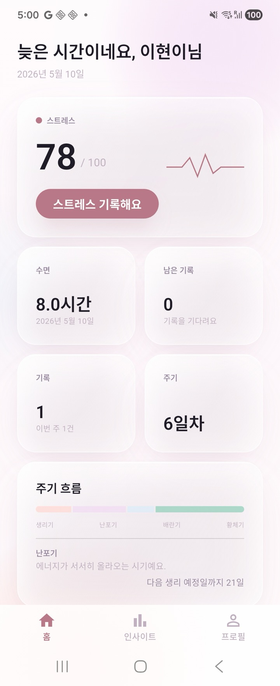
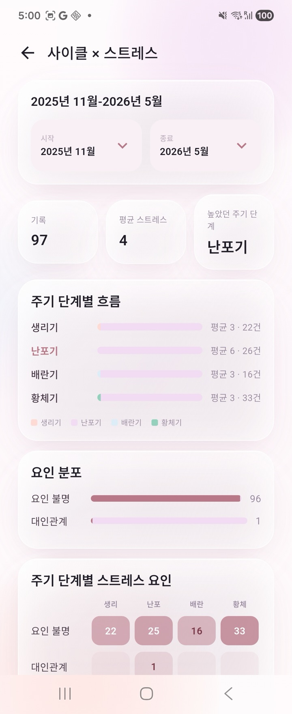
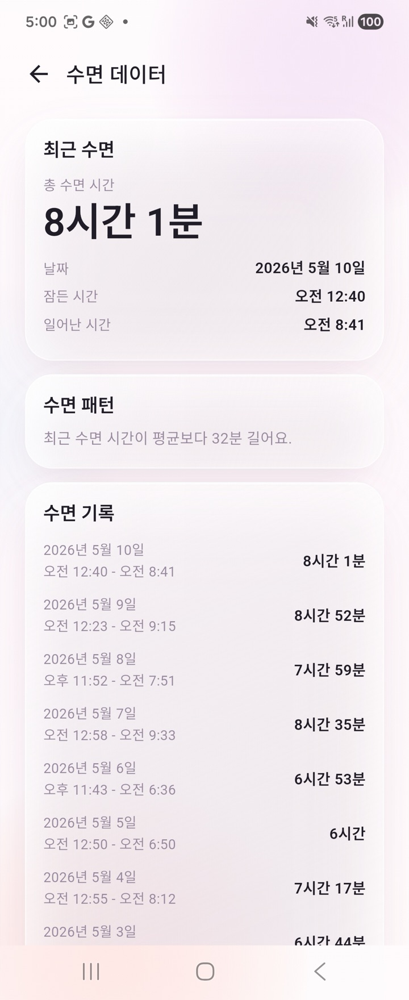

01
Detect
PPG, HRV, EDA — read continuously. A small Mamba model spots pre-stress on the watch itself.
Luma reads your body's earliest stress cues from your Galaxy Watch and guides you back with a single breath — on device, in real time.
See how it works
PPG, HRV, EDA — read continuously. A small Mamba model spots pre-stress on the watch itself.
One soft haptic. A wrist breathing cue. No notification spam, no charts to read.
Cycle and sleep folded into the same quiet timeline. You see patterns, not numbers.



On-device AI · Galaxy Watch 8 · AWS Seoul